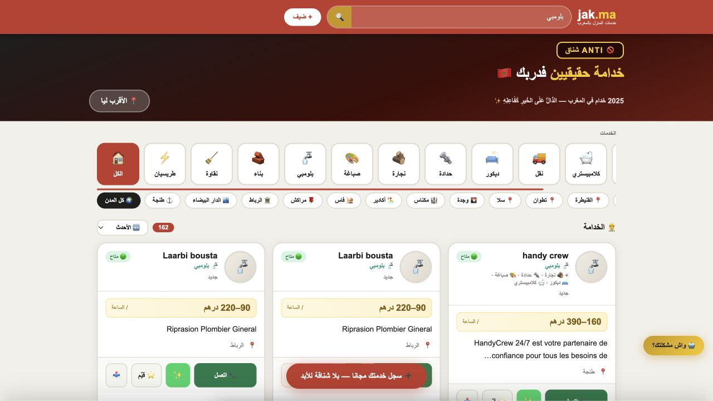
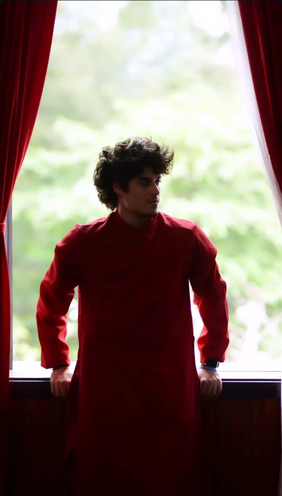
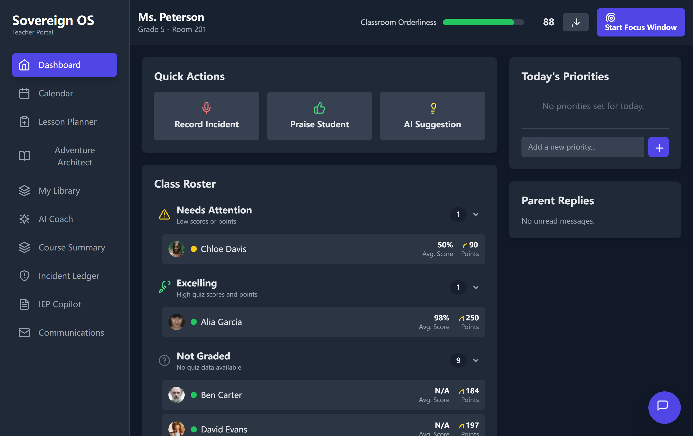
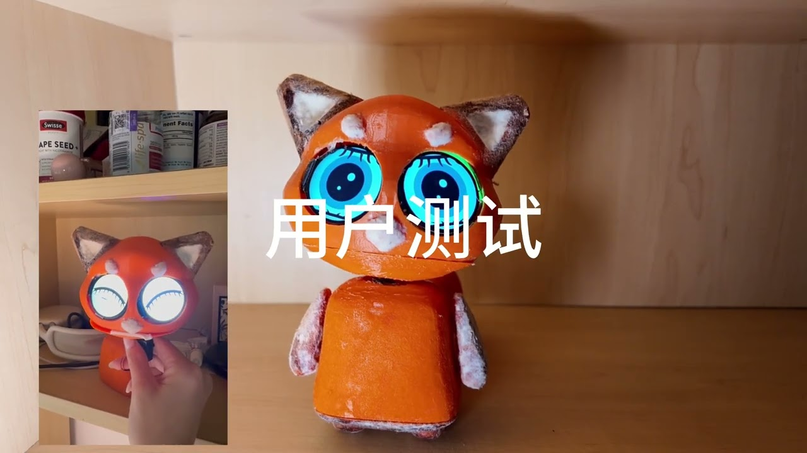

Open project detailsjak.ma
Founder · Product & engineeringI built a marketplace that turns Darija service requests into relevant worker matches.
170 fixture-based engine tests
Explore the projectI build agents and workflows around tasks people do by hand. Then I test whether they work.
From Morocco. Based in Shenzhen.
AI Deployment Product Manager.

A marketplace, a school portal, and an AI companion.
Different problems. My part in each one.

Open project detailsI built a marketplace that turns Darija service requests into relevant worker matches.
170 fixture-based engine tests
Explore the project
Open project detailsI built a school portal for lessons, quizzes, progress, and everyday school workflows.
First Prize + Best AI IP · Tsinghua
Explore the project
Open project detailsI led product for our team’s ERNIE-powered AI companion for children.
Team: Third Prize · National Baidu ERNIE Hackathon
Explore the projectWork recognized at Tsinghua and Baidu.
Team wins, with my contribution made clear.
AI Hardware Track · RedFox
I led product for our team’s AI companion.
Tsinghua AIID × NetDragon · School OS
I built School OS solo. It also won Best AI IP.
Tsinghua SIGS · Sino Univ
I led our six-person team, from the idea to the build.
AIID project documentation
I built the site that tells the story behind our projects.
Also: a full CSC scholarship at Tsinghua and the NPU President’s Scholarship for my bachelor’s.
Most company code stays private under confidentiality agreements. These are personal projects and work I can share publicly.
No projects match. Try another word or choose All work.
From computer vision to AI products. Work and study overlap; open a role to see the tasks, contributions, and evidence.
LinkedIn
I’m Sami, a Moroccan builder studying AI + Innovation Design at Tsinghua SIGS. I like working through the whole problem: what people need, what to build, and how to tell if it helps.
That has taken me from computer vision and manufacturing systems to agents, evaluation, and products of my own. I work across Arabic, Darija, English, and French, with conversational Mandarin.
Read my research